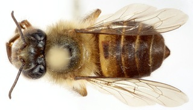
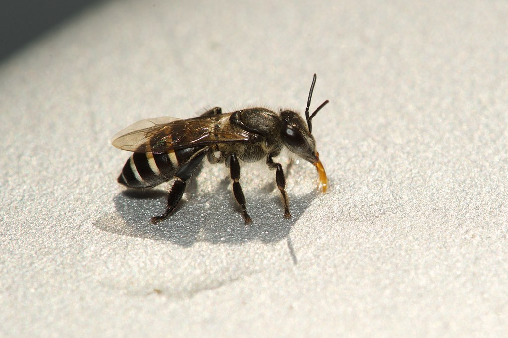

Apicolmena
Apis mellifera
La abeja europea, es hoy en día la especie de mayor distribución en el mundo. Originaria del viejo mundo, Europa, África y parte de Asia fue introducida al continente Americano y Australiano. Fue clasificada por Carolus Linnaeus in 1758.

Apis cerana
Esta especie tiene un tamaño menor o similar al de la abeja europea, y lentamente es desplazada por Apis mellifera en virtud que las colonias son menos productivas medidas en kilogramos de miel, lo cual la hace más atractiva para los apicultores.

Apis florea
La abeja melífera asiática chica (Apis florea) tiene una área de distribución geográfica comprendida en climas calurosos. En el oeste, la especie está presente en las partes más calurosas de Omán, Irán y Paquistán, y en el continente Indio en Sri Lanka. También presente en Indonesia, pero su centro de distribución primaria es Asia suroriental.

Apis dorsata
La Apis dorsata es comúnmente denominada abeja asiática grande o abeja gigante. El área de distribución de la abeja gigante se superpone al de la abeja pequeña Apicultura fácil / Apis florea. Paquistán, quizás partes de Afganistán meridional, al oeste el subcontinente Indio, Sri Lanka, Indonesia y al este las Filipinas. Su distribución de norte a sur se extiende de la parte meridional de China a Indonesia; se encuentra en Nueva Guinea y en Australia.
Apis nigrocincta
Apis nigrocincta es una especie de abeja melífera que se distribuye en las islas Mindanao, Sangihe y Sulawesi o Islas Célebes de las Filipinas.

Apis koschevnikovi
La abeja de Koschevnikov es una especie de abeja descrita por v. Buttel-Reepen (Koeniger et al., 1988; Maa, 1953; Tingek et al., 1988), dedicada a Koschevnikov, quien a principios del siglo XX realizó uno de los primeros trabajos de morfometría de abejas.

Apis andreniformis
Fue la segunda especie de abeja melífera reconocida. La biología, la distribución geográfica y el estatus específico fue reconocido por numerosos autores. Pero podemos decir que Apis andreniformis fue separada de Apicultura fácil / Apis florea recientemente, en virtud que se hallaron lugares donde las especies vivien simpátricamente. Ambas especies se distribuyen por toda la región torpical y subtropical de Asia.

Apis nulensis
Apicultura fácil / Apis cerana se dristribuye en el este de Asia, en un área que va de Afganistán al este, al este de Rusia e Indonesia y norte de Japón.

Apis laboriosa
La abeja melífera del Himalaya, es la especie más grande del mundo de las abejas melíferas. Su distribución geográfica es Nepal, Bután, China y noreste de Laos, específicamente las montañas del Himalaya, su rango de distribución geográfico varía altitudinalmente, ocupando un piso entre los 850 y 3500 metros de altura del mar. Localmente son denominadas abejas melíferas de las rocas o abejas melíferas de las piedras, en virtud que a ella adhieren sus panales.